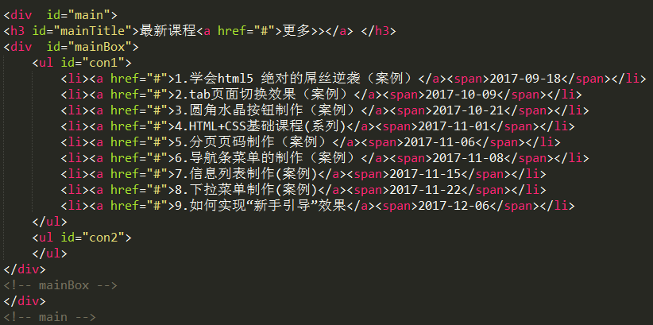
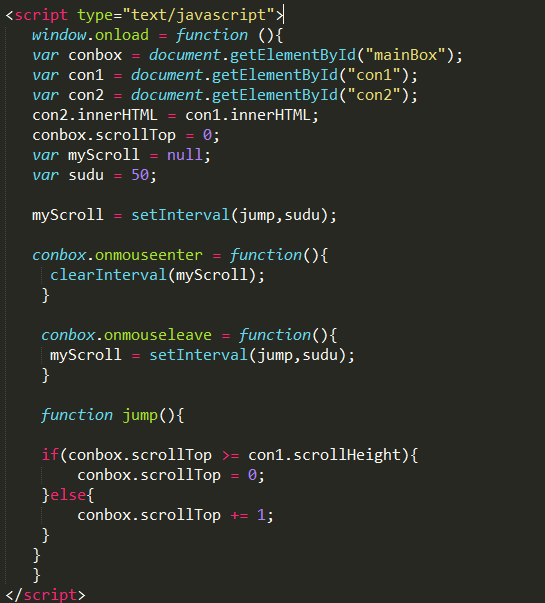
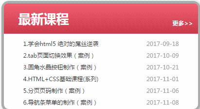

js实现信息滚动
- 发表于2017-10-29
- 分类于javascript篇
js实现信息的自动滚动效果也是笔者早期的一个小demo，今天就拿出来说一下实现的原理和效果。
我的基本实现思路是先用一个div套住信息列表，如下图所示：

然后为了防止信息滚动交接时出现裂痕，所以克隆一个信息列表。最后用一个定时器，里面一个函数判断信息列表滚动的scrollTop是否大于它的scrollHeight,大于就一直++，否则赋值为0。如下代码：

最后填上实现效果，希望对各位有所帮助。
